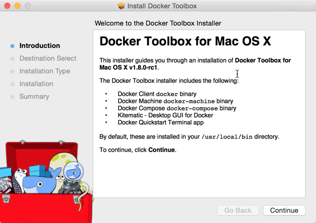
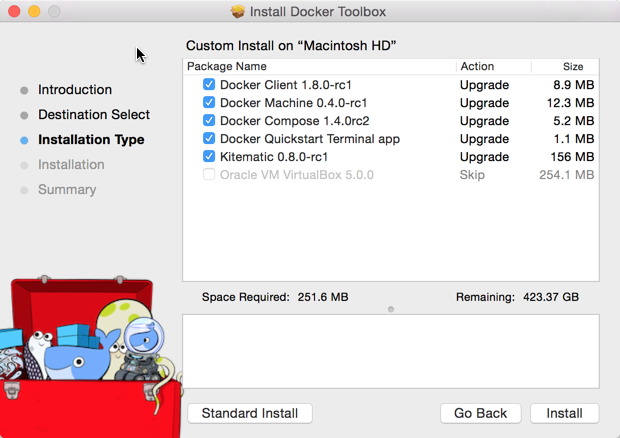
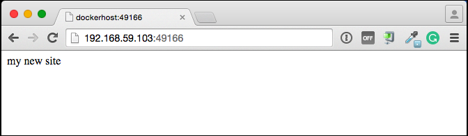

Mac OS X
Note: This release of Docker deprecates the Boot2Docker command line in
favor of Docker Machine. Use the Docker Toolbox to install Docker Machine as
well as the other Docker tools.
You install Docker using Docker Toolbox. Docker Toolbox includes the following Docker tools:
- Docker Machine for running the
docker-machine binary
- Docker Engine for running the
docker binary
- Docker Compose for running the
docker-compose binary
- Kitematic, the Docker GUI
- a shell preconfigured for a Docker command-line environment
- Oracle VM VirtualBox
Because the Docker daemon uses Linux-specific kernel features, you can’t run
Docker natively in OS X. Instead, you must use docker-machine to create and
attach to a virtual machine (VM). This machine is a Linux VM that hosts Docker
for you on your Mac.
Requirements
Your Mac must be running OS X 10.8 “Mountain Lion” or newer to install the
Docker Toolbox.
Learn the key concepts before installing
In a Docker installation on Linux, your physical machine is both the localhost
and the Docker host. In networking, localhost means your computer. The Docker
host is the computer on which the containers run.
On a typical Linux installation, the Docker client, the Docker daemon, and any
containers run directly on your localhost. This means you can address ports on a
Docker container using standard localhost addressing such as localhost:8000 or
0.0.0.0:8376.

In an OS X installation, the docker daemon is running inside a Linux VM called
default. The default is a lightweight Linux VM made specifically to run
the Docker daemon on Mac OS X. The VM runs completely from RAM, is a small ~24MB
download, and boots in approximately 5s.

In OS X, the Docker host address is the address of the Linux VM. When you start
the VM with docker-machine it is assigned an IP address. When you start a
container, the ports on a container map to ports on the VM. To see this in
practice, work through the exercises on this page.
Installation
If you have VirtualBox running, you must shut it down before running the
installer.
Go to the Docker Toolbox page.
Click the installer link to download.
Install Docker Toolbox by double-clicking the package or by right-clicking
and choosing “Open” from the pop-up menu.
The installer launches the “Install Docker Toolbox” dialog.

Press “Continue” to install the toolbox.
The installer presents you with options to customize the standard
installation.

By default, the standard Docker Toolbox installation:
- installs binaries for the Docker tools in
/usr/local/bin
- makes these binaries available to all users
- installs VirtualBox; or updates any existing installation
Change these defaults by pressing “Customize” or “Change
Install Location.”
Press “Install” to perform the standard installation.
The system prompts you for your password.

Provide your password to continue with the installation.
When it completes, the installer provides you with some information you can
use to complete some common tasks.

Press “Close” to exit.
Running a Docker Container
To run a Docker container, you:
- create a new (or start an existing) Docker virtual machine
- switch your environment to your new VM
- use the
docker client to create, load, and manage containers
Once you create a machine, you can reuse it as often as you like. Like any
VirtualBox VM, it maintains its configuration between uses.
There are two ways to use the installed tools, from the Docker Quickstart Terminal or
from your shell.
From the Docker Quickstart Terminal
Open the “Applications” folder or the “Launchpad”.
Find the Docker Quickstart Terminal and double-click to launch it.
The application:
- opens a terminal window
- creates a
default VM if it doesn’t exists, and starts the VM after
- points the terminal environment to this VM
Once the launch completes, the Docker Quickstart Terminal reports:

Now, you can run docker commands.
Verify your setup succeeded by running the hello-world container.
$ docker run hello-world
Unable to find image 'hello-world:latest' locally
511136ea3c5a: Pull complete
31cbccb51277: Pull complete
e45a5af57b00: Pull complete
hello-world:latest: The image you are pulling has been verified.
Important: image verification is a tech preview feature and should not be
relied on to provide security.
Status: Downloaded newer image for hello-world:latest
Hello from Docker.
This message shows that your installation appears to be working correctly.
To generate this message, Docker took the following steps:
1. The Docker client contacted the Docker daemon.
2. The Docker daemon pulled the "hello-world" image from the Docker Hub.
(Assuming it was not already locally available.)
3. The Docker daemon created a new container from that image which runs the
executable that produces the output you are currently reading.
4. The Docker daemon streamed that output to the Docker client, which sent it
to your terminal.
To try something more ambitious, you can run an Ubuntu container with:
$ docker run -it ubuntu bash
For more examples and ideas, visit:
http://docs.docker.com/userguide/
A more typical way to interact with the Docker tools is from your regular shell command line.
From your shell
This section assumes you are running a Bash shell. You may be running a
different shell such as C Shell but the commands are the same.
Create a new Docker VM.
$ docker-machine create --driver virtualbox default
Creating VirtualBox VM...
Creating SSH key...
Starting VirtualBox VM...
Starting VM...
To see how to connect Docker to this machine, run: docker-machine env default
This creates a new default VM in VirtualBox.
The command also creates a machine configuration in the
~/.docker/machine/machines/default directory. You only need to run the
create command once. Then, you can use docker-machine to start, stop,
query, and otherwise manage the VM from the command line.
List your available machines.
$ docker-machine ls
NAME ACTIVE DRIVER STATE URL SWARM
default * virtualbox Running tcp://192.168.99.101:2376
If you have previously installed the deprecated Boot2Docker application or
run the Docker Quickstart Terminal, you may have a dev VM as well. When you
created default VM, the docker-machine command provided instructions
for learning how to connect the VM.
Get the environment commands for your new VM.
$ docker-machine env default
export DOCKER_TLS_VERIFY="1"
export DOCKER_HOST="tcp://192.168.99.101:2376"
export DOCKER_CERT_PATH="/Users/mary/.docker/machine/machines/default"
export DOCKER_MACHINE_NAME="default"
# Run this command to configure your shell:
# eval "$(docker-machine env default)"
Connect your shell to the default machine.
$ eval "$(docker-machine env default)"
Run the hello-world container to verify your setup.
$ docker run hello-world
Toolbox installs the Docker Engine binary, the Docker binary on your system. When you
use the Docker Quickstart Terminal or create a default VM manually, Docker
Machine updates the ~/.docker/machine/machines/default folder to your
system. This folder contains the configuration for the VM.
You can create multiple VMs on your system with Docker Machine. Therefore, you
may end up with multiple VM folders if you have more than one VM. To remove a
VM, use the docker-machine rm <machine-name> command.
Migrate from Boot2Docker
If you were using Boot2Docker previously, you have a pre-existing Docker
boot2docker-vm VM on your local system. To allow Docker Machine to manage
this older VM, you can migrate it.
Open a terminal or the Docker CLI on your system.
Type the following command.
$ docker-machine create -d virtualbox --virtualbox-import-boot2docker-vm boot2docker-vm docker-vm
Use the docker-machine command to interact with the migrated VM.
The docker-machine subcommands are slightly different than the boot2docker
subcommands. The table below lists the equivalent docker-machine subcommand
and what it does:
boot2docker |
docker-machine |
docker-machine description |
| init |
create |
Creates a new docker host. |
| up |
start |
Starts a stopped machine. |
| ssh |
ssh |
Runs a command or interactive ssh session on the machine. |
| save |
- |
Not applicable. |
| down |
stop |
Stops a running machine. |
| poweroff |
stop |
Stops a running machine. |
| reset |
restart |
Restarts a running machine. |
| config |
inspect |
Prints machine configuration details. |
| status |
ls |
Lists all machines and their status. |
| info |
inspect |
Displays a machine’s details. |
| ip |
ip |
Displays the machine’s ip address. |
| shellinit |
env |
Displays shell commands needed to configure your shell to interact with a machine |
| delete |
rm |
Removes a machine. |
| download |
- |
Not applicable. |
| upgrade |
upgrade |
Upgrades a machine’s Docker client to the latest stable release. |
Example of Docker on Mac OS X
Work through this section to try some practical container tasks on a VM. At this
point, you should have a VM running and be connected to it through your shell.
To verify this, run the following commands:
$ docker-machine ls
NAME ACTIVE DRIVER STATE URL SWARM
default * virtualbox Running tcp://192.168.99.100:2376
The ACTIVE machine, in this case default, is the one your environment is pointing to.
Access container ports
Start an NGINX container on the DOCKER_HOST.
$ docker run -d -P --name web nginx
Normally, the docker run commands starts a container, runs it, and then
exits. The -d flag keeps the container running in the background
after the docker run command completes. The -P flag publishes exposed ports from the
container to your local host; this lets you access them from your Mac.
Display your running container with docker ps command
CONTAINER ID IMAGE COMMAND CREATED STATUS PORTS NAMES
5fb65ff765e9 nginx:latest "nginx -g 'daemon of 3 minutes ago Up 3 minutes 0.0.0.0:49156->443/tcp, 0.0.0.0:49157->80/tcp web
At this point, you can see nginx is running as a daemon.
View just the container’s ports.
$ docker port web
443/tcp -> 0.0.0.0:49156
80/tcp -> 0.0.0.0:49157
This tells you that the web container’s port 80 is mapped to port
49157 on your Docker host.
Enter the http://localhost:49157 address (localhost is 0.0.0.0) in your browser:

This didn’t work. The reason it doesn’t work is your DOCKER_HOST address is
not the localhost address (0.0.0.0) but is instead the address of the
your Docker VM.
Get the address of the default VM.
$ docker-machine ip default
192.168.59.103
Enter the http://192.168.59.103:49157 address in your browser:

Success!
To stop and then remove your running nginx container, do the following:
$ docker stop web
$ docker rm web
Mount a volume on the container
When you start a container it automatically shares your /Users/username directory
with the VM. You can use this share point to mount directories onto your container.
The next exercise demonstrates how to do this.
Change to your user $HOME directory.
$ cd $HOME
Make a new site directory.
$ mkdir site
Change into the site directory.
$ cd site
Create a new index.html file.
$ echo "my new site" > index.html
Start a new nginx container and replace the html folder with your site directory.
$ docker run -d -P -v $HOME/site:/usr/share/nginx/html \
--name mysite nginx
Get the mysite container’s port.
$ docker port mysite
80/tcp -> 0.0.0.0:49166
443/tcp -> 0.0.0.0:49165
Open the site in a browser:

Try adding a page to your $HOME/site in real time.
$ echo "This is cool" > cool.html
Open the new page in the browser.

Stop and then remove your running mysite container.
$ docker stop mysite
$ docker rm mysite
To upgrade Docker Toolbox, download an re-run the Docker Toolbox
installer.
To uninstall, do the following:
List your machines.
$ docker-machine ls
NAME ACTIVE DRIVER STATE URL SWARM
dev * virtualbox Running tcp://192.168.99.100:2376
my-docker-machine virtualbox Stopped
default virtualbox Stopped
Remove each machine.
$ docker-machine rm dev
Successfully removed dev
Removing a machine deletes its VM from VirtualBox and from the
~/.docker/machine/machines directory.
Remove the Docker Quickstart Terminal and Kitematic from your “Applications” folder.
Remove the docker, docker-compose, and docker-machine commands from the /usr/local/bin folder.
$ rm /usr/local/bin/docker
Delete the ~/.docker folder from your system.
Learning more
Use docker-machine help to list the full command line reference for Docker Machine. For more
information about using SSH or SCP to access a VM, see the Docker Machine
documentation.
You can continue with the Docker User Guide. If you are
interested in using the Kitematic GUI, see the Kitematic user
guide.